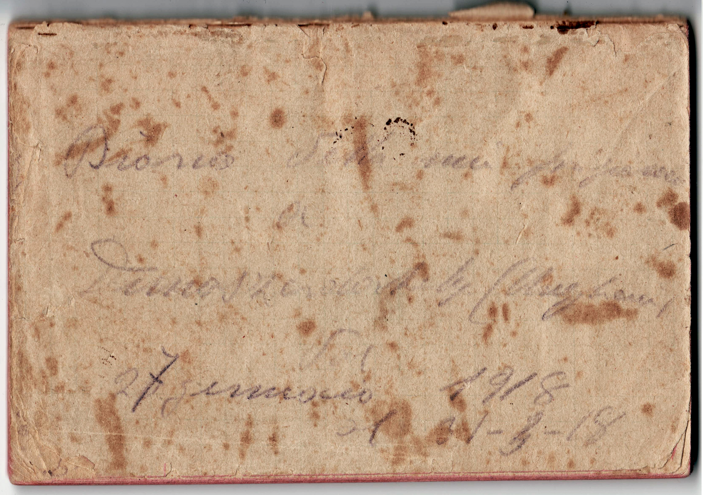
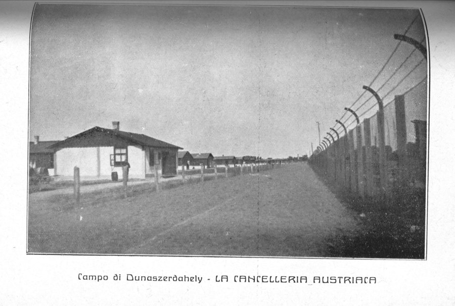
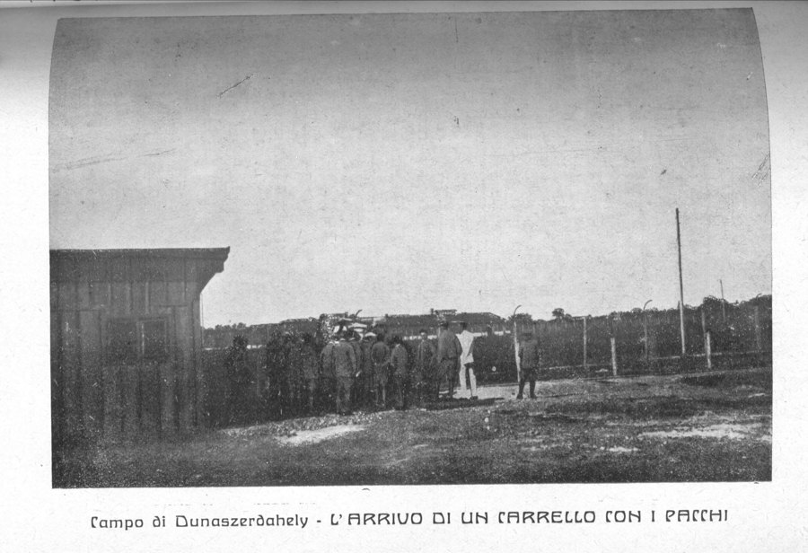
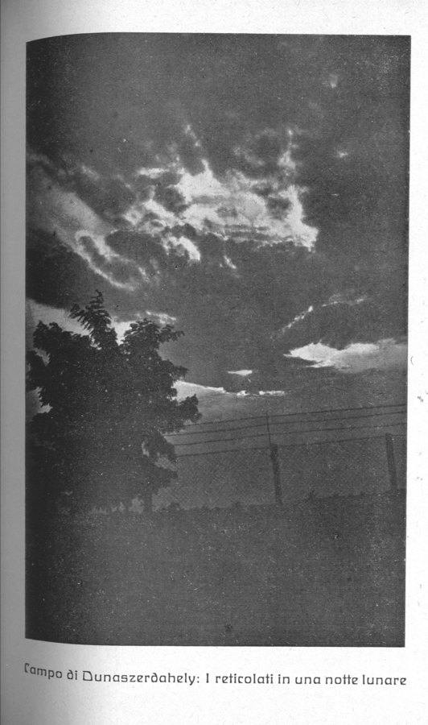
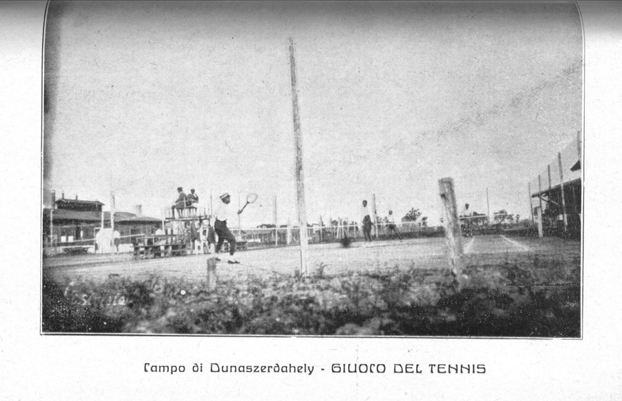
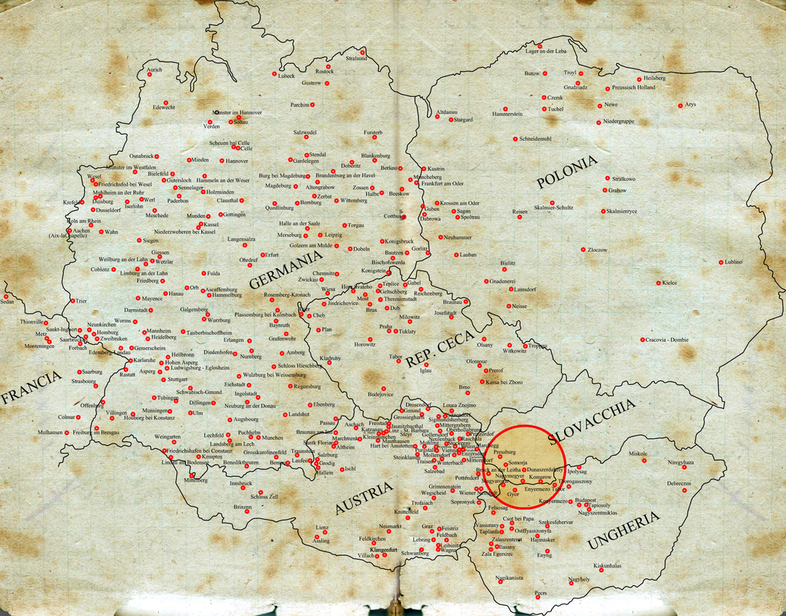

IL TACCUINO DI GIOVANNI · 1918
Leggere il diario, pagina dopo pagina
Le scansioni del diario sono affiancate a una trascrizione preliminare, parziale e in molti punti frammentaria. Le prime pagine sono confrontate con la trascrizione familiare; nelle successive vengono proposte soltanto le porzioni decifrate. Molte righe restano da leggere e tutte le proposte dubbie richiedono revisione.
La raccolta comprende 49 immagini: le 43 scansioni del PDF e sei scansioni di inizio febbraio recuperate dall’archivio familiare. Il numero delle immagini non coincide con il numero delle pagine del taccuino; le ultime due sono frammenti.
Scarica la trascrizione parzialeApri il PDF fornito · 43 scansioni ↗Note sull’edizione ↓ Fotografie del campo ↓
Il manoscritto
Apri l’immagine ↗
Con lo zoom puoi scorrere l’immagine nelle due direzioni. Il contrasto cambia solo la visualizzazione.
La lettura proposta
BOZZA INCOMPLETACopertina
Bozza confrontata con la trascrizione familiare
Note di lettura e provenienza
Copertina molto macchiata. Il titolo è leggibile anche nel riferimento familiare; la grafia del luogo nella trascrizione familiare è incerta.
Leggi tutte le trascrizioni disponibili e le lacune
La raccolta segue l’ordine delle scansioni. Alcune schede contengono solo parole isolate o note sulle lacune; non costituiscono una trascrizione integrale.
PDF01 · Copertina
Bozza confrontata con trascrizione familiare
Copertina molto macchiata. Il titolo è leggibile anche nel riferimento familiare; la grafia del luogo nella trascrizione familiare è incerta.
PDF02 · 28 gennaio 1918
Bozza confrontata con trascrizione familiare
Confronto con trascrizione familiare, pp. 1–2. Le parole spezzate a fine pagina sono ricomposte nella lettura.
PDF03 · 28 gennaio, seguito
Bozza confrontata con trascrizione familiare
La frase «ora che ha dei bambini» è ripresa dal riferimento familiare, ma la lettura del manoscritto richiede verifica: possibile «ora che ha la bambina». Non è stata corretta tacitamente.
PDF04 · 28–29 gennaio
Bozza confrontata con trascrizione familiare
Confrontata con trascrizione familiare, pp. 5–6.
PDF05 · 29–30 gennaio
Bozza confrontata con trascrizione familiare
Confronto con riferimento familiare pp. 7–8. «La colma» è una proposta, non una lettura accertata.
PDF06 · 30–31 gennaio
Bozza confrontata con trascrizione familiare
Confronto con riferimento familiare pp. 9–10.
PDF07 · 31 gennaio–1 febbraio
Bozza confrontata con trascrizione familiare
Confronto con riferimento familiare pp. 11–12.
R1 · 2–3 febbraio
Bozza da trascrizione familiare, da verificare sul manoscritto
Non presente nel PDF allegato. Recuperata dalla cartella DIARIO dell’archivio del titolare. Posizione proposta tra le scansioni PDF 7 e 8; date e raccordi da revisionare. Testo di confronto derivato dal documento familiare pippo-000052.docx, pp. 13–14; il raccordo con R2 è editoriale. Le lacune erano già presenti nel riferimento.
R2 · 3 febbraio, seguito
Breve porzione da trascrizione familiare; resto da trascrivere
Non presente nel PDF allegato. Recuperata dalla cartella DIARIO dell’archivio del titolare. Posizione proposta tra le scansioni PDF 7 e 8; date e raccordi da revisionare. Porzione di testo ricavata dalla p. 15 del riferimento familiare; non costituisce la trascrizione integrale della scansione.
R3 · 3, seguito – 4–5 febbraio
Lettura parziale da revisionare
Scansione recuperata dalla cartella DIARIO, assente dal PDF allegato. La lettura è parziale; i passaggi mancanti non sono completati per supposizione. Il mese delle intestazioni numeriche è ricavato dalla sequenza. Sono necessarie ulteriori verifiche.
R4 · 5, seguito – 6 febbraio
Lettura parziale da revisionare
Scansione recuperata dalla cartella DIARIO, assente dal PDF allegato. La lettura è parziale; i passaggi mancanti non sono completati per supposizione. Il mese delle intestazioni numeriche è ricavato dalla sequenza. Sono necessarie ulteriori verifiche.
R5 · 6, seguito – 7 febbraio
Lettura parziale da revisionare
Scansione recuperata dalla cartella DIARIO, assente dal PDF allegato. La lettura è parziale; i passaggi mancanti non sono completati per supposizione. Il mese delle intestazioni numeriche è ricavato dalla sequenza. Sono necessarie ulteriori verifiche.
R6 · 8 febbraio
Lettura parziale da revisionare
Scansione recuperata dalla cartella DIARIO, assente dal PDF allegato. La lettura è parziale; i passaggi mancanti non sono completati per supposizione. Il mese delle intestazioni numeriche è ricavato dalla sequenza. Sono necessarie ulteriori verifiche.
PDF08 · 8, seguito – 9–10 febbraio [mese dalla sequenza]
Lettura parziale da revisionare
Bozza parziale: sono trascritti soltanto i passaggi per cui è possibile proporre una lettura. Le parentesi quadre segnalano incertezza o omissioni; «passo non trascritto» non significa necessariamente testo irrecuperabile. L’inizio continua il giorno 8 nella scansione recuperata R6; non si aggiunge una nuova data al testo privo di intestazione.
PDF09 · 10, seguito – 11 febbraio [mese dalla sequenza]
Lettura parziale da revisionare
Bozza parziale: sono trascritti soltanto i passaggi per cui è possibile proporre una lettura. Le parentesi quadre segnalano incertezza o omissioni; «passo non trascritto» non significa necessariamente testo irrecuperabile.
PDF10 · 11, seguito – 12 febbraio [mese dalla sequenza]
Lettura parziale da revisionare
Bozza parziale: sono trascritti soltanto i passaggi per cui è possibile proporre una lettura. Le parentesi quadre segnalano incertezza o omissioni; «passo non trascritto» non significa necessariamente testo irrecuperabile.
PDF11 · Seguito senza nuova data leggibile
Lettura parziale da revisionare
Bozza parziale: sono trascritti soltanto i passaggi per cui è possibile proporre una lettura. Le parentesi quadre segnalano incertezza o omissioni; «passo non trascritto» non significa necessariamente testo irrecuperabile. Questa scheda conserva solo poche parole leggibili: non vengono ricostruite frasi a partire da parole isolate.
PDF12 · 13–14 febbraio [mese dalla sequenza]
Lettura parziale da revisionare
Bozza parziale: sono trascritti soltanto i passaggi per cui è possibile proporre una lettura. Le parentesi quadre segnalano incertezza o omissioni; «passo non trascritto» non significa necessariamente testo irrecuperabile.
PDF13 · 14 febbraio, seguito [data dal raccordo]
Lettura parziale da revisionare
Bozza parziale: sono trascritti soltanto i passaggi per cui è possibile proporre una lettura. Le parentesi quadre segnalano incertezza o omissioni; «passo non trascritto» non significa necessariamente testo irrecuperabile. Gli orari e la data della cartolina vanno ricontrollati: lettura preliminare, non normalizzata per coerenza narrativa.
PDF14 · 15 febbraio [mese dalla sequenza]
Lettura parziale da revisionare
Bozza parziale: sono trascritti soltanto i passaggi per cui è possibile proporre una lettura. Le parentesi quadre segnalano incertezza o omissioni; «passo non trascritto» non significa necessariamente testo irrecuperabile.
PDF15 · Seguito senza nuova intestazione leggibile
Lettura parziale da revisionare
Bozza parziale: sono trascritti soltanto i passaggi per cui è possibile proporre una lettura. Le parentesi quadre segnalano incertezza o omissioni; «passo non trascritto» non significa necessariamente testo irrecuperabile.
PDF16 · Seguito – intestazione [16?]
Lettura parziale da revisionare
Bozza parziale: sono trascritti soltanto i passaggi per cui è possibile proporre una lettura. Le parentesi quadre segnalano incertezza o omissioni; «passo non trascritto» non significa necessariamente testo irrecuperabile. L’intestazione numerica non è sicura. Il raccordo con la scheda PDF18, che menziona «Domani 16 febbraio», deve essere verificato prima di assegnare una data certa a questo gruppo.
PDF17 · Seguito senza data leggibile
Lettura parziale da revisionare
Bozza parziale: sono trascritti soltanto i passaggi per cui è possibile proporre una lettura. Le parentesi quadre segnalano incertezza o omissioni; «passo non trascritto» non significa necessariamente testo irrecuperabile.
PDF18 · Seguito – 16 febbraio
Lettura parziale da revisionare
Bozza parziale: sono trascritti soltanto i passaggi per cui è possibile proporre una lettura. Le parentesi quadre segnalano incertezza o omissioni; «passo non trascritto» non significa necessariamente testo irrecuperabile. La frase «Domani 16 febbraio» è mantenuta separata dall’intestazione «16» sulla pagina destra; non si risolve arbitrariamente la data delle scansioni precedenti.
PDF19 · 17 – [19?] febbraio [mese dalla sequenza]
Lettura parziale da revisionare
Bozza parziale: sono trascritti soltanto i passaggi per cui è possibile proporre una lettura. Le parentesi quadre segnalano incertezza o omissioni; «passo non trascritto» non significa necessariamente testo irrecuperabile. Il numero nella pagina destra può essere letto come 19 ma richiede verifica; non si inserisce una giornata 18 assente da questa lettura.
PDF20 · 20 febbraio [mese dalla sequenza]
Lettura parziale da revisionare
Bozza parziale: sono trascritti soltanto i passaggi per cui è possibile proporre una lettura. Le parentesi quadre segnalano incertezza o omissioni; «passo non trascritto» non significa necessariamente testo irrecuperabile.
PDF21 · 20, seguito – 21 febbraio [mese dalla sequenza]
Lettura parziale da revisionare
Bozza parziale: sono trascritti soltanto i passaggi per cui è possibile proporre una lettura. Le parentesi quadre segnalano incertezza o omissioni; «passo non trascritto» non significa necessariamente testo irrecuperabile.
PDF22 · Seguito senza nuova data leggibile
Lettura parziale da revisionare
Bozza parziale: sono trascritti soltanto i passaggi per cui è possibile proporre una lettura. Le parentesi quadre segnalano incertezza o omissioni; «passo non trascritto» non significa necessariamente testo irrecuperabile.
PDF23 · 22–23 febbraio [mese dalla sequenza]
Lettura parziale da revisionare
Bozza parziale: sono trascritti soltanto i passaggi per cui è possibile proporre una lettura. Le parentesi quadre segnalano incertezza o omissioni; «passo non trascritto» non significa necessariamente testo irrecuperabile.
PDF24 · 24 febbraio [mese dalla sequenza]
Lettura parziale da revisionare
Bozza parziale: sono trascritti soltanto i passaggi per cui è possibile proporre una lettura. Le parentesi quadre segnalano incertezza o omissioni; «passo non trascritto» non significa necessariamente testo irrecuperabile.
PDF25 · 24, seguito – 25 febbraio [mese dalla sequenza]
Lettura parziale da revisionare
Bozza parziale: sono trascritti soltanto i passaggi per cui è possibile proporre una lettura. Le parentesi quadre segnalano incertezza o omissioni; «passo non trascritto» non significa necessariamente testo irrecuperabile. La pagina destra è molto debole: non si propone una ricostruzione della giornata dalla sola intestazione.
PDF26 · 26–27 febbraio [mese dalla sequenza]
Lettura parziale da revisionare
Bozza parziale: sono trascritti soltanto i passaggi per cui è possibile proporre una lettura. Le parentesi quadre segnalano incertezza o omissioni; «passo non trascritto» non significa necessariamente testo irrecuperabile.
PDF27 · 27, seguito – 28 febbraio [mese dalla sequenza]
Lettura parziale da revisionare
Bozza parziale: sono trascritti soltanto i passaggi per cui è possibile proporre una lettura. Le parentesi quadre segnalano incertezza o omissioni; «passo non trascritto» non significa necessariamente testo irrecuperabile.
PDF28 · Seguito senza nuova data leggibile
Lettura parziale da revisionare
Bozza parziale: sono trascritti soltanto i passaggi per cui è possibile proporre una lettura. Le parentesi quadre segnalano incertezza o omissioni; «passo non trascritto» non significa necessariamente testo irrecuperabile.
PDF29 · Seguito – 2 marzo [mese dalla sequenza]
Lettura parziale da revisionare
Bozza parziale: sono trascritti soltanto i passaggi per cui è possibile proporre una lettura. Le parentesi quadre segnalano incertezza o omissioni; «passo non trascritto» non significa necessariamente testo irrecuperabile. L’intestazione «2» segue il gruppo di fine febbraio; il mese marzo è desunto dalla sequenza, non scritto accanto al numero in questa porzione.
PDF30 · 2, seguito – 3 marzo [mese dalla sequenza]
Lettura parziale da revisionare
Bozza parziale: sono trascritti soltanto i passaggi per cui è possibile proporre una lettura. Le parentesi quadre segnalano incertezza o omissioni; «passo non trascritto» non significa necessariamente testo irrecuperabile.
PDF31 · 4–5–6 marzo [mese dalla sequenza]
Lettura parziale da revisionare
Bozza parziale: sono trascritti soltanto i passaggi per cui è possibile proporre una lettura. Le parentesi quadre segnalano incertezza o omissioni; «passo non trascritto» non significa necessariamente testo irrecuperabile.
PDF32 · 6, seguito – 7–8 marzo [mese dalla sequenza]
Lettura parziale da revisionare
Bozza parziale: sono trascritti soltanto i passaggi per cui è possibile proporre una lettura. Le parentesi quadre segnalano incertezza o omissioni; «passo non trascritto» non significa necessariamente testo irrecuperabile. Il numero «8» in alto è presente insieme a un «7»; i riferimenti sono lasciati come lettura preliminare, senza decidere se una cifra sia una correzione.
PDF33 · 8, seguito – 9–10 marzo [mese dalla sequenza]
Lettura parziale da revisionare
Bozza parziale: sono trascritti soltanto i passaggi per cui è possibile proporre una lettura. Le parentesi quadre segnalano incertezza o omissioni; «passo non trascritto» non significa necessariamente testo irrecuperabile.
PDF34 · [11?] marzo [mese dalla sequenza]
Lettura parziale da revisionare
Bozza parziale: sono trascritti soltanto i passaggi per cui è possibile proporre una lettura. Le parentesi quadre segnalano incertezza o omissioni; «passo non trascritto» non significa necessariamente testo irrecuperabile. Intestazione numerica e molte righe coperte da macchie o a basso contrasto; le parole isolate non sono combinate in frasi congetturali.
PDF35 · 12 marzo [mese dalla sequenza]
Lettura parziale da revisionare
Bozza parziale: sono trascritti soltanto i passaggi per cui è possibile proporre una lettura. Le parentesi quadre segnalano incertezza o omissioni; «passo non trascritto» non significa necessariamente testo irrecuperabile.
PDF36 · 13 marzo [mese dalla sequenza]
Lettura parziale da revisionare
Bozza parziale: sono trascritti soltanto i passaggi per cui è possibile proporre una lettura. Le parentesi quadre segnalano incertezza o omissioni; «passo non trascritto» non significa necessariamente testo irrecuperabile.
PDF37 · 17 marzo
Lettura parziale da revisionare
Bozza parziale: sono trascritti soltanto i passaggi per cui è possibile proporre una lettura. Le parentesi quadre segnalano incertezza o omissioni; «passo non trascritto» non significa necessariamente testo irrecuperabile. La data «17 marzo» è esplicita; la valutazione del contenuto della lettera è molto debole e resta da verificare sul manoscritto.
PDF38 · 18 marzo [mese dalla sequenza]
Lettura parziale da revisionare
Bozza parziale: sono trascritti soltanto i passaggi per cui è possibile proporre una lettura. Le parentesi quadre segnalano incertezza o omissioni; «passo non trascritto» non significa necessariamente testo irrecuperabile.
PDF39 · 19–20–21 marzo [mese dalla sequenza]
Lettura parziale da revisionare
Bozza parziale: sono trascritti soltanto i passaggi per cui è possibile proporre una lettura. Le parentesi quadre segnalano incertezza o omissioni; «passo non trascritto» non significa necessariamente testo irrecuperabile.
PDF40 · [22–23?] marzo [mese dalla sequenza]
Lettura parziale da revisionare
Bozza parziale: sono trascritti soltanto i passaggi per cui è possibile proporre una lettura. Le parentesi quadre segnalano incertezza o omissioni; «passo non trascritto» non significa necessariamente testo irrecuperabile. La data è molto sbiadita: il gruppo numerico è proposto con punto interrogativo; non si attribuiscono a questi numeri avvenimenti non decifrati.
PDF41 · [25?]–26 marzo [mese dalla sequenza]
Lettura parziale da revisionare
Bozza parziale: sono trascritti soltanto i passaggi per cui è possibile proporre una lettura. Le parentesi quadre segnalano incertezza o omissioni; «passo non trascritto» non significa necessariamente testo irrecuperabile.
PDF42 · Frammento finale · data non stabilita
Lettura parziale da revisionare
Bozza parziale: sono trascritti soltanto i passaggi per cui è possibile proporre una lettura. Le parentesi quadre segnalano incertezza o omissioni; «passo non trascritto» non significa necessariamente testo irrecuperabile. La perdita della carta è visibile nell’originale e non viene ricostruita. Non si attribuisce il frammento al 31 marzo sulla sola base della descrizione precedente del sito.
PDF43 · Frammento finale · data non stabilita
Lettura parziale da revisionare
Bozza parziale: sono trascritti soltanto i passaggi per cui è possibile proporre una lettura. Le parentesi quadre segnalano incertezza o omissioni; «passo non trascritto» non significa necessariamente testo irrecuperabile. Il bordo strappato e alcune pieghe comportano perdite fisiche o interruzioni del testo; nessun completamento congetturale.
Note sull’edizione
Fonte principale: PDF del diario fornito dalla famiglia, 43 scansioni. Le immagini R1–R6 provengono dai file file000181.jpg–file000186.jpg dell’archivio familiare, assenti dal PDF e collocati tra le scansioni PDF07 e PDF08 sulla base di date e raccordi del testo. La collocazione proposta non certifica che tutti i fogli originari del taccuino siano conservati.
Le letture iniziali si basano anche sulla trascrizione già preparata dalla famiglia, che contiene a sua volta dubbi e lacune. Le letture successive sono una prima decifrazione assistita e richiedono confronto con gli originali. Non sono state ricostruite graficamente le parole mancanti. I frammenti finali non sono datati d’ufficio al 31 marzo.
Questa edizione resta aperta alla revisione. Per una correzione indica il codice della scansione, la posizione della riga e la lettura proposta. Aggiornamento: 13 novembre 2026.
DOCUMENTI VISIVI · 1918
Il campo nelle fotografie d’epoca
Quattro immagini di Dunaszerdahely conservate nella raccolta First World War Central Power POW Camps della Western Michigan University. La data 1918 e le identificazioni seguono il catalogo dell’archivio. Le fotografie documentano l’ambiente del campo: non abbiamo elementi per riconoscervi Giovanni o collegarle a giorni precisi del diario.
Tocca una fotografia per aprirla a piena risoluzione e ingrandirla.

Il comando e il recinto
Il comando a sinistra, le baracche e il reticolato del campo.
1918 · autore anonimo
Scheda e fonte: Western Michigan University ↗

L’arrivo dei pacchi
Prigionieri italiani attendono il carro con i pacchi destinati al campo.
1918 · autore anonimo
Scheda e fonte: Western Michigan University ↗

Il reticolato al chiaro di luna
Una veduta notturna del recinto del campo.
1918 · autore anonimo
Scheda e fonte: Western Michigan University ↗

Una partita di tennis
Prigionieri italiani giocano a tennis; altri assistono alla partita.
1918 · autore anonimo
Scheda e fonte: Western Michigan University ↗
Provenienza delle riproduzioni: ScholarWorks, Western Michigan University Libraries. Le schede collegate conservano le descrizioni e i riferimenti archivistici delle singole immagini.
Il campo e i documenti di approfondimento
Il diario di prigionia
Il documento è un taccuino scritto a matita di un centinaio di pagine che raccoglie i pensieri, le speranze ed i tormenti durante la prigionia al campo di Dunaszerdahely.
Mappa dei campi in Europa della grande guerra

Il campo di Dunaszerdahely
Mario Pazzi di questo periodo ci lascia un interessante e ricco archivio fotografico, dove vengono ritratti oltre ai momenti di vita, le attività e l’organizzazione nei campi, altri ufficiali prigionieri, ripresi in gruppo o singolarmente.